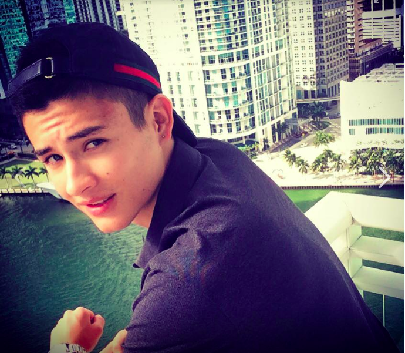
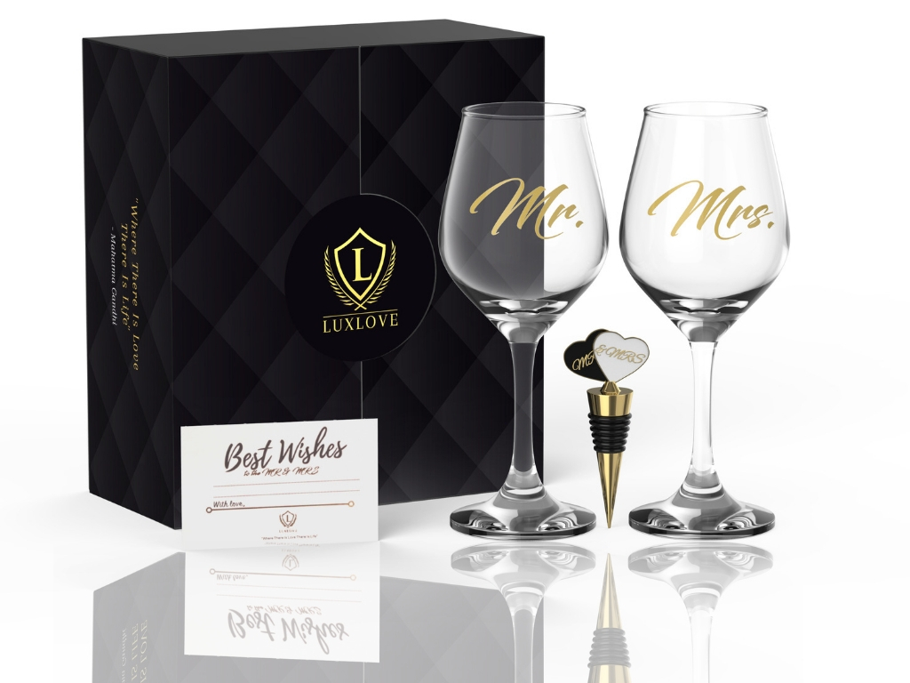

Jacobo Hernandez
1232 Brickell Bay, 33131, Miami/Florida

linkedin Profile
About Me
A hardworking, effective, disciplined student with a high sense of mind fullness and not afraid of exploring new things. Having lived in several countries around the world (Switzerland, Colombia and United States), I find myself being a
trilingual person with a high cultural awareness. My life experiences have pushed me to pursue business management at the University of Miami, a career that is highly competitive and suits my personality.
My Company
LUXLOVE LLC is a brand I created last year and that launched its products on Amazon this year. We focus on couple gifts such as wine glasses and will expand our product line this year.

LUXLOVE Website
Work And Leadership Experience
Primas.io Blockchain
Brand Ambassador
Miami,Florida
-
Worked alongside the Primas team located in Shanghai in order to contribute to development and expansion of the brand in America
- Gained first-hand experience and insight on the Blockchain industry
- Received team based training while expanding my networks in China and the Blockchain space in general
TLG Commerce
Intern
Shanghai, China
- Conducted marketing research for a top luxury brand interested in penetrating the Chinese market in order to boost sales revenue
- Met with clients and prospects in order to show them the benefits of ecommerce for their brand
- Handled social media and increased costumer engagement
Coral Way Medical Office
Medical Assistant
Miami,Florida
- Handled patient’s database and records, ensuring correct and up to date information
Uhealth Fitness & Wellness Center
Calling Canes
Professional Caller
Coral Gables, Florida
- Worked for a meaningful and worthwhile cause, calling alumni, parents and friends of the university in order to fundraise money to keep improving the University of Miami
- Utilized my communication skills in order to convince prospects into helping out the university with their personal participation
Groups & Organizations
University Of Miami Cryptocurrency Group
- Took part in weekly open discussions on Blockchain’s future, possibilities and innovation applied to business
- Presented the use cases of Blockchain in the supply chain industry, showing the disruptive power of this technology over the whole industry
COlSA
- Contributed through socio-cultural events, the creation of bonds and encouraged integration among members with the ultimate goal of facilitating and improving the student’s college experience
- Partook in a series of fundraising events that allowed the re-collection of money for Latin American children with socio-economic problems
Office of Disability
Volunteer Note Taker
- Participated in the Volunteer Note Taker Program with the office of disability services at the University of Miami
- Gathered clear and concise notes that would be submitted on weekly bases in order to help students with disabilities
SKILLS, ACTIVITIES & INTERESTS
Languages: Fluent in French and Spanish
Technical Skills: IMovie; Facebook Ads, Google Ad Words, Social Media Platforms (Facebook, Instagram, Snapchat and Twitter), Microsoft Office, Ecommerce
Activities: Trading, Motocross, Soccer and Water Skiing
Interests: Blockchain, Stocks, Leadership, Management, Sports
CLASS SCHEDULE
| Monday |
Tuesday |
Wednesday |
Thursday |
Friday |
| No Class |
9:00am-5:00pm |
5:00pm-8:30pm |
9:00am-3:00pm |
No class |